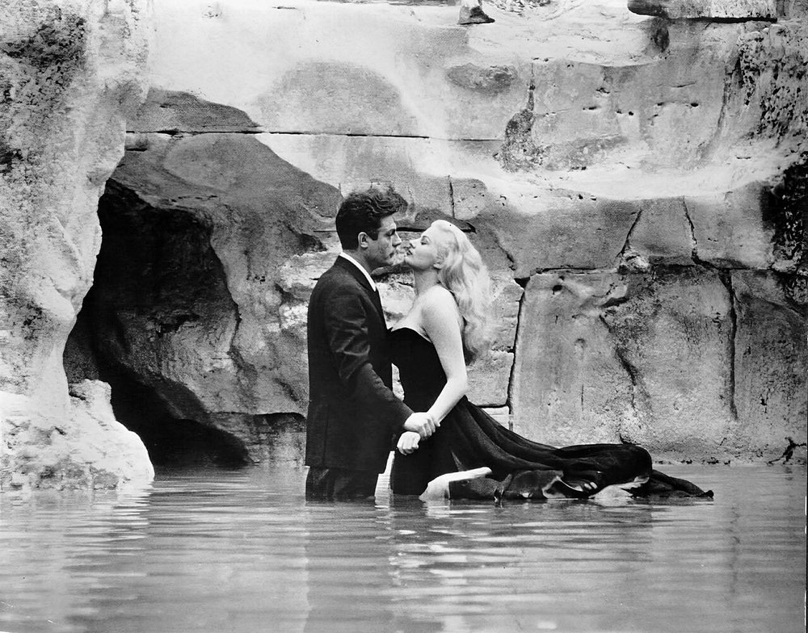

La Dolce Vita, Still (the Trevi Fountain)
Federico Fellini · 1960 · Film still, black and white
In copyright. Look and learn: shown for study, not for download.
The scene in the Trevi Fountain took a week to shoot in winter: in March according to the BBC, in late January according to Anita Ekberg. Fellini claimed that Ekberg stood in the cold water in her dress for hours without trouble, while Marcello Mastroianni wore a wetsuit under his clothes and still could not manage until he had finished a bottle of vodka.